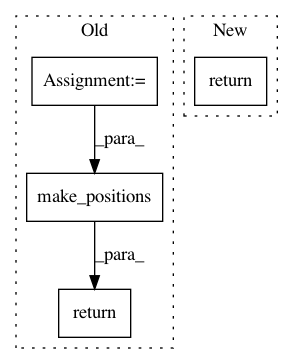

50fdf591464ca63940a2c1c5e7057b2f4df034f5,fairseq/models/fconv.py,FConvDecoder,forward,#FConvDecoder#Any#Any#,187
Before Change
self.fc3 = Linear(out_embed_dim, num_embeddings, dropout=dropout)
def forward(self, input_tokens, encoder_out):
positions = Variable(make_positions(input_tokens.data, self.dictionary.pad(),
left_pad=LanguagePairDataset.LEFT_PAD_TARGET))
return self._forward(input_tokens, positions, encoder_out)
def incremental_forward(self, input_tokens, encoder_out):
Forward pass for one time step.
// positions is the same for every token when decoding a single step
After Change
def forward(self, input_tokens, encoder_out):
if self._is_incremental_eval:
return self.incremental_forward(input_tokens, encoder_out)
else:
return self.batch_forward(input_tokens, encoder_out)
def batch_forward(self, input_tokens, encoder_out):
In pattern: SUPERPATTERN
Frequency: 4
Non-data size: 4
Instances
Project Name: pytorch/fairseq
Commit Name: 50fdf591464ca63940a2c1c5e7057b2f4df034f5
Time: 2017-11-11
Author: myleott@fb.com
File Name: fairseq/models/fconv.py
Class Name: FConvDecoder
Method Name: forward
Project Name: elbayadm/attn2d
Commit Name: 2ad588856238aadd27120078810c742c490c4aac
Time: 2017-10-02
Author: myleott@fb.com
File Name: fairseq/data.py
Class Name: LanguagePairDataset
Method Name: __getitem__